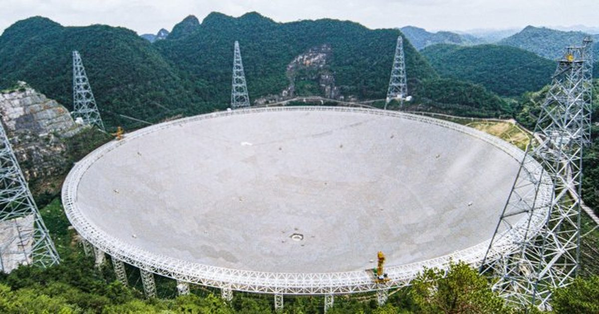

Спросите Итана: Каким должно быть послание человечества Вселенной?
Один из самых больших открытых вопросов во всей Вселенной сегодня - насколько изобильна разумная инопланетная жизнь прямо сейчас.
Мы можем себе представить, что внеземной разум распространен, и что Млечный Путь кишит цивилизациями — тысячами или даже миллионами из них — такими же интеллектуально продвинутыми или даже более технологически продвинутыми, чем мы.
В качестве альтернативы, мы могли бы быть редкостью, где лишь немногие цивилизации